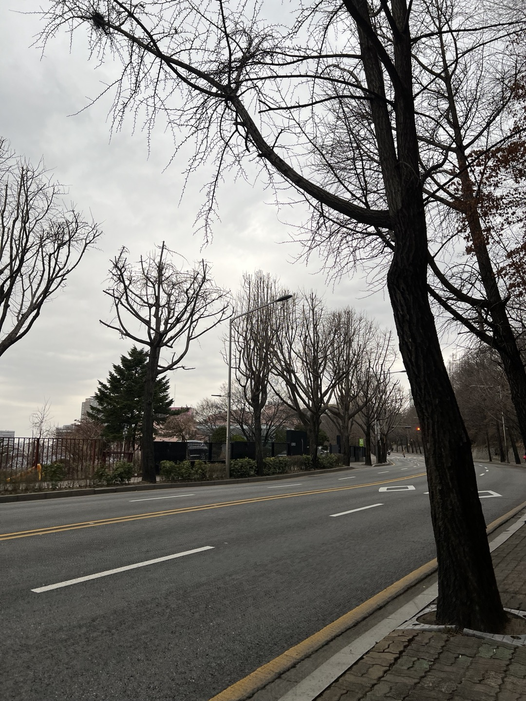

서울의 길을 걷다!
서울의 길을 걷다!  Rainy day on March
22, 2024
Rainy day on March
22, 2024
나를 소개합니다😎
Kim Na Young
김나영
金娜永 | KIM Nayoung
| 이름 | 김나영 |
|---|---|
| 출생 | 2002.10.8 경기도 성남 |
| 국적 | 대한민국 |
| 신체 | 168cm, 250mm, O형 |
| 학적 | 건국대학교 컴퓨터공학부 3학년 |
| 관심분야 |
웹 프론트엔드 분야 현재 멋쟁이사자처럼 동아리에서 프론트엔드 세션을 공부하고 있음. |
| 취미 | 산책, 테니스, 여행, 사진 찍기 |
| 소확행 | 맛있는 음식먹기, 휴일에 소파에 누워서 나른하게 tv보기 |
| mbti | ISFJ / ISFP |
| 좋아하는 음식 | 치킨, 떡볶이, 티라미수 |
| 싫어하는 음식 | 향이 강한 향신료, 회, 안 익힌 해산물 |
짝꿍을 소개합니다😉
이름: 유지연
건국대학교
컴퓨터공학부 2학년
(2002년생으로 저랑 동갑이랍니다.😚)
20문20답
- 생일이 언제야?
- 10월 1일이야.
- 혈액형이 뭐야?
- ab형이야.
- mbti가 어떻게 돼?
- mbti가 나랑 완전히 맞지는 않은데 estp야. istp가 나올때도 있어.
- 취미나 특기같은거 있어?
- 난 산책하는 걸 좋아해. 그리고 친구들 만나서 이야기하는 것도 좋아해.
- 키가 되게 큰데 키가 몇이야? 그리고 발사이즈는?
- 키는 171.2cm이고 발사이즈는 260mm야.
- 형제자매 있어?
- 오빠가 2명있어!
- 가장 좋아하는 음식이 뭐야?
- 나는 닭한마리를 진짜 좋아해!
- 싫어하거나 못먹는 음식은?
- 일단, 민트초코.. 난 반민초파야. 그리고 향이 강한 음식을 싫어해. 예를들어, 마라탕, 소이간장 등등
- 배스킨라빈스에서 가장 좋아하는 맛 3가지는?
- 레인보우샤벳, 아몬드봉봉, 엄마는외계인!
- 놀이기구 잘타?
- 완전~! 우리나라에 있는 웬만한건 다 잘 타.
- 공포물 좋아해?
- 아니. 난 무서운거 싫어해. 난 로맨스 코미디 장르를 제일 좋아해.
- 최근에 재밌게 본 영화난 드라마 있어?
- 눈물의 여왕 완전 재밌게보고있어! 요즘 드라마 안봤는데 오랜만에 본방사수하는 드라마가 생겼어.
-
여름이
좋아, 겨울이 좋아? (더울때 시원한 에어컨 밑에서 수박먹기
vs.
추울때 따뜻한 이불속에서 귤까먹기) - 난 여름에 수박!! 예전엔 겨울이 더 좋았는데, 요즘엔 추위를 너무 많이 타서 추운게 너무 싫어.
- 좋아하는 색상은?
- 음.. 주황색..? 색깔말고 난 숫자중에 3을 젤 좋아해!
- 좋아하는 연예인있어?
- 예전에는 아이돌을 좋아했는데, 요즘엔 뭐.. 별로 관심없어.
- 좋아하는 음악있어?
- 난 '사랑하고있어'라는 곡을 제일 좋아해.
- 게임 좋아해?
- 지금까지 안했었는데 최근에 롤을 시작했어. 잘은 못하지만 재밌더라구.
- 가장 최근에 갔던 여행지가 어디야?
- 작년에 휴학하고 한달동안 유럽여행을 갔어. 이탈리아, 프랑스, 스위스, 영국을 다녀왔어.
- 지금까지 갔던 곳 중 가장 좋았던 곳은 어디야?
- 스위스! 융프라우는 아닌데 이름 모를 산이있어. 이름은 모르지만 난 거기가 제일 좋았던것 같아.
- 알바해본적있어? 아님 해보고싶은 알바 있어?
- 해본적있지! 카페, 빵집, 학원채점알바 해봤어. 과외도 해보고싶어!
인터뷰 완료 인증 ~
이곳을 소개합니다🌳
남산야외식물원 & 남산타워
선정이유
처음에 산책로들을 탐색하다가 남산 주변에 있는 식물원 산책로가 눈에 딱 들어왔습니다. 다양한 식물도 보고 맑은 공기 속에서 주변의 남산타워 풍경도 눈으로 즐기며 산책할 수 있다는것이 마음에 들어 이곳으로 선정하게되었습니다.
간략한 소개
'남산야외식물원'은
서울 중심부에 위치한 남산의 자연환경을 활용하여 조성된
식물원입니다. 식물원 내에는 여러 테마로 구성된 정원이 있으며, 이를
통해 다양한 식물의 생태와 특성에 대해 학습할 수 있습니다. 무료로
개방되어 있어 누구나 방문할 수 있으며, 일상에서 벗어나 자연을
즐기고 싶은 이들에게 추천하는 장소입니다.
'남산타워'는
대한민국 서울특별시 용산구 남산에 위치한 아이콘적인 관광
명소입니다. 높이는 236.7m로, 서울 시내를 한 눈에 바라볼 수 있는
전망대가 자리하고 있습니다. 서울의 랜드마크로서 유명하며, 연인들
사이에서는 낭만적인 데이트 코스로 인기가 많습니다. 특히 해가 질
때의 야경은 아름다워 많은 이들의 사랑을 받고 있습니다. 남산타워와
N서울타워는 사실상 같은 건물을 가리키는 용어이며 "N서울타워"는
남산타워의 공식 명칭입니다.
이렇게 다녀오세요🐥
준비물

- 산책코스이기 때문에 반드시 운동화를 착용해야해요. 안그러면
발이 아파요ㅠ
- 목마를 수도 있으니 물은 필수!
- 땀 날때 닦을 손수건
- 언제 어디서 필요할지 모르느 휴대용티슈도 챙겨주세요
- 추가적으로, 대중교통을 이용하실 분들은 교통카드 챙기는것
잊지말기~!
주의사항
단순히 산책하려고 방문하는 것은 상관없지만,
겨울이나
초봄에 방문할 경우에는 식물원에 파릇파릇한 식물들이 아직
많이 없어서 황량해 보일 수도 있으니
*예쁜사진을 찍고 싶은 분들은 주의하세요*
산책 경로
저는 집에서부터 303버스를 타고 하얏트호텔 정류장에서
내렸는데요~
정류장에서 3분정도 걸으면 이렇게 남산야외식물원의 입구가
나옵니다.
입구에는 남산공원이라는 간판이 있는데 옆에는 이렇게 산책로가 펼쳐집니다. 산책로에 남산타워도 자그맣게 보이네요~
남산야외식물원은 무궁화원, 실개천, 야생화단지, 유아체험원, 팔도소나무단지, 야생화원 이렇게 테마별로 나뉘어있어요.
일단 산책길을 따라 쭉 들어와봤습니다. 아직은 초봄이라 그런가 식물들이 많이 없네요.. 생각보다 길도 언덕이 많아서 그냥 가볍게 산책할 정도는 아닌것같아요. (오실거면 산책할 마음 단단히 먹고 오시길..)
저희는 남산타워쪽으로 가기 위해 남산서울타워 방향으로
올라갔는데요,
(왜 이렇게 언덕이야..헉헉😰) 계속 올라오다 보면 운동기구들도 있네요.
갈수록 이렇게 산이라.. 저희는 야외식물원 안에서 서울남산타워 가는길을 포기하고 외곽쪽으로 나와 걸었답니다. (하하..)
이 안내를 보고 식물원 내에서 남산타워쪽으로 가시는 분들은 저희처럼 길을 잃을 수도 있기때문에 식물원에 오셨으면 남산야외식물원 안에서만 노는것을 추천드립니다. (남산타워에 가려면 식물원에서 아예 나와서 가세요.)
휴우.. 아무튼 산책 제대로 했네요.
이렇게 도로로 나오니 평지라 걷기도 편하고 산책하기도 더 편하네요!! (그럼 산책로를 왜간거임ㅡㅡ)

근데 걸어도 걸어도 남산타워 입구가 안나오는 건
왜때문일까요..?
(4-50분을 걸었는데도 도대체 왜
들어가는 곳이 안보일까요ㅜㅜ)
결국엔 여기서 버스를 타고 갔답니다.
남산공원이
생각보다 엄청커서 웬만하면 산책정도만 하고.. 목적지를
정하고 절대 걸어가지는 마세요!!
(버스를 타고도 산속으로 엄청 깊게 들어가네요..)
어쨌든 남산야외식물원에서 남산타워까지 산책 끝~
위치 & 대중교통 정보
주소: 서울 용산구 이태원동 259-16
지하철: 6호선
한강진역 1번출구에서 908m
버스: 하얏트호텔
정류장 또는 남산체육관 정류장
남산야외식물원~남산타워
2가지 방법이 있는데요!! 그냥 가고싶다: 전자 / 좀 걷고싶다: 후자를 선택하시면 됩니다.
추천 맛집
남산 돈까스는 유명해서 다들 잘 아시죠~? 맛은 맛있긴한데 저는 그렇게 특별한지는 모르겠더라구요. 그래도 워낙 유명하니까 안먹어봤다면 한번쯤은 추천드릴게요!
두번째로는 이곳인데요, 짝꿍이 굉장히 좋아하는 음식이라해서 같이 먹으러 갔어요.
바로 닭한마리 입니다!!
저는 닭한마리 칼국수는 들어봤어도 닭한마리라는 음식은 처음 들어봤는데요~ 빨간 양념을 넣으니까 국물이 많은 닭볶음탕 같더라구요. (나중에 칼국수 사리도 추가해서 먹는답니다.)
날이 쌀쌀해서 그런지 따뜻하니 맛있게 먹었습니다~!
특유의
닭비린내도 안나더라구요. 주변에 동국대가 있어서
동국대생들도 많이 오는 모양이에요.
아무튼 남산 오시면 동대 닭한마리 추천합니다~~Bye